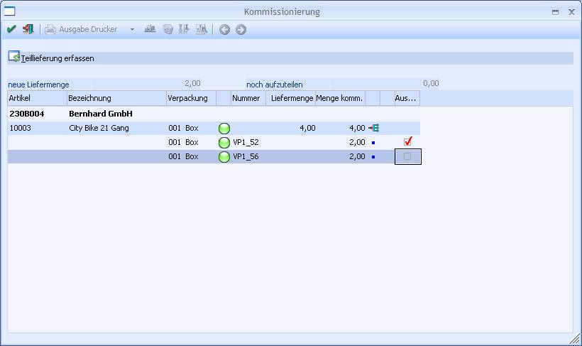
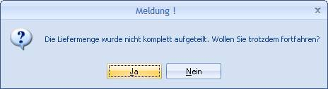

Wenn bei einer schon kommissionierten Position im Belegerfassen die Liefermenge reduziert wird (d.h. eine Teillieferung der Auftragsmenge), wird folgende Meldung ausgegeben:

Danach wird das Fenster "Kommissionierung" geöffnet, in dem alle zugehörigen Verpackungen angezeigt werden.

Ø Neue Liefermenge
Die reduzierte Liefermenge aus der Belegzeile ist als Information ausgewiesen.
Ø Noch aufzuteilen
Die in der Tabelle noch abzuwählende Menge ist in diesem Feld als Information ausgewiesen.
Tabelle
Alle zugehörigen Verpackungen werden in der Tabelle inkl. Artikelnummer, Bezeichnung, Verpackung, Verpackungsnummer, Liefermenge und Kommissionsmenge angezeigt. Alle Werte sind Informationswerte und können nicht bearbeitet werden.
Achtung
Im Fenster "Kommissionierung" können nur bestehende Kommissionierungen aktiviert bzw. deaktiviert werden. Mengenänderungen bzw. Hinzufügen neuer Verpackungen können nach wie vor nur im Menüpunkt "Kommissionierung" durchgeführt werden.
Ø Auswahl
Die nicht auszuliefernden Verpackungen können mittels Checkbox in Spalte "Auswahl" deaktiviert werden.
Beim Speichern mit F5 bzw. dem OK-Button erhalten die ausgewählten Zeilen ein Kennzeichen, sodass nur sie beim Lieferscheindruck die neue Lieferscheinnummer erhalten. Die Liefermenge der Position wird nach dem Lieferscheindruck im Auftragsbeleg auf die kommissionierte Menge gesetzt, d.h. wenn der Auftrag das nächste Mal im Belegerfassen oder in der Kommissionierung aufgerufen wird, wird die restliche Liefermenge angezeigt.
Beim Speichern wird geprüft, ob die kommissionierte Menge der ausgewählten Verpackungen mit der neuen Liefermenge übereinstimmt. Wenn nicht, wird eine Warnmeldung ausgegeben:

Wird diese Meldung mit JA bestätigt, so werden die Einstellungen übernommen (Liefermenge nicht gleich kommissionierte Menge). Wird die Meldung mit NEIN beantwortet, bleibt das Fenster offen und Sie können die Einstellungen in der Tabelle nochmals überarbeiten.
Achtung
Wenn das Fenster mit ESC beendet wird, werden die Einstellungen in der Tabelle verworfen. Dies hat zur Folge, dass alle dazugehörigen Kommissionierungen für die Belegzeile als geliefert gekennzeichnet werden.
Sonderfälle:
Wenn nach dem Aktivieren bzw. Deaktivieren der Verpackungen der Lieferschein nicht gedruckt, sondern nur gespeichert wird, bleibt dieses Kennzeichen erhalten, wird aber im Menüpunkt "Kommissionierung" nicht berücksichtigt. D.h. wenn der Auftrag danach in der Kommissionierung geöffnet wird, wird angezeigt dass mehr kommissioniert als geliefert wird (da die Liefermenge durch das Speichern bereits geändert wurde). Falls der Auftrag dort unbedingt gespeichert werden muss, müsste die Liefermenge der nicht aktivierten Zeilen auf 0 gesetzt werden, damit wird aber auch das Kennzeichen gelöscht. Grundsätzlich ist die Logik des Programms danach ausgelegt, dass zuerst im Kundenbestellungen bearbeiten die Liefermenge festgelegt, danach die Menge in der Kommissionierung die Verpackungen erfasst und dann der Lieferschein gedruckt wird.
Beim Storno eines Lieferscheines mit "Wiederherstellen der Kommissionierung" wird die Liefermenge wieder auf die kommissionierte Menge gesetzt.